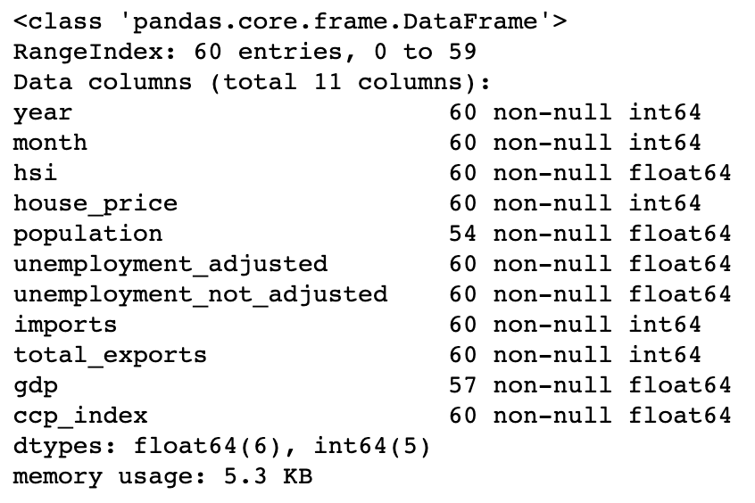
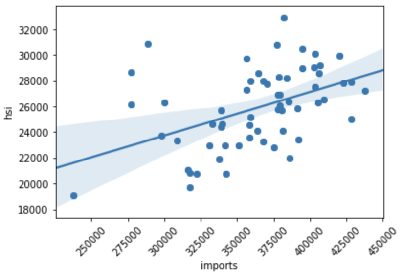

Property Price Prediction¶
In this tutorial, you will learn:
The basics in macroeconomic analysis
The ways of analyzing macroeconomic indicators
How to build a house price prediction model
Intro to macroeconomic analysis¶
As we have discussed in the first tutorial, macroeconomic analysis is a ways of
investigating the macroeconomic indicators that influence the stock market.
In this module, we will first analyze the macroeconomic indicators and explore how
the indicators affect the stock prices in Hong Kong.
Then, we will specifically analyze the Hong Kong real estate market, as we believe
that it is one of the most important macroeconomic indicator that can reflect the
Hong Kong’s economy.
In addition, we will build a house price prediction model to predict a house price .
Macroeconomic indicators in Hong Kong¶
Let’s have a look at the data first. The data contains 8 different
macroeconomic indicators collected from 2016 to 2020.
Use
df.info() to print information of all columns.

The column information of macroeconomic data.¶
Univariate analysis¶
In univarite analysis, use
pandas.Dataframe.describe() function to examine the
distribution of the numerical features. It returns the statistical summary such as mean,
standard deviation, min, and max of a data frame.For a better understanding of the statistics summary, use
seaborn.distplot()
function to visualise the results with histograms.# Statistical summary
print(df[feature_name].describe())
# Histogram
plt.figure(figsize=(8,4))
sns.distplot(df[feature_name], axlabel=feature_name);
Bivariate analysis¶
In bivariate analysis, we will study the correlations between
a macroeconomic indicator and the Hang Seng Index.
Use
matplotlib.pyplot.scatter() and seaborn.regplot() to
visualize the relationship between two features.x = df[feature_name]
y = df['hsi']
plt.scatter(x, y)
plt.xticks(rotation=45)
fig = sns.regplot(x=feature_name, y="hsi", data=df)

An example of a scatter plot with a regression line.¶
Then, use
pandas.Dataframe.corr() and seaborn.heatmap() functions
to compute a pairwise correlation of features and visualize the correlation matrix.fig, ax = plt.subplots(figsize=(10,10))
cols = df.corr().sort_values('hsi', ascending=False).index
cm = np.corrcoef(df[cols].values.T)
hm = sns.heatmap(cm, annot=True, square=True, annot_kws={'size':11}, yticklabels=cols.values, xticklabels=cols.values)
plt.show()

Heatmap - macroeconomic indicators of Hong Kong.¶
According to the above figure, we can see that GDP, house price, population, imports,
year, total exports and composite consumer price index are positively correlated to the
Hang Seng index, while both seasonally adjusted unemployment rate and not seasonally
adjusted unemployment rate are negatively correlated to the Hang Seng index.
The Hong Kong real estate market¶
Using the same data analysis technique, we will now analyze the Hong Kong real estate market.
Data collection¶
Under construction
Data pre-processing¶
Under construction
Data Exploration¶
Under construction
House price prediction with machine learning¶
Under construction
Attention
All investments entail inherent risk. This repository seeks to solely educate
people on methodologies to build and evaluate algorithmic trading strategies.
All final investment decisions are yours and as a result you could make or lose money.